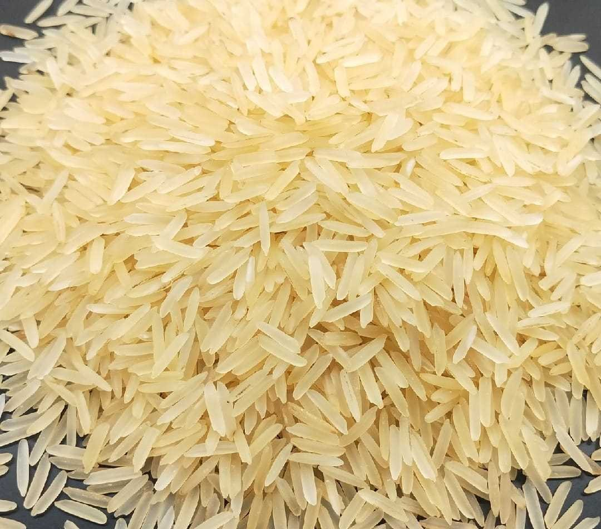

About Basmati Rice
Our premium Basmati Rice is carefully aged and sourced from the foothills of the Himalayas, known for producing the finest long-grain rice in the world. It is aged for at least 12 months to enhance aroma and elongation after cooking. JontyMart offers the highest quality export-grade Basmati that meets global food safety standards.
Key Features
- Extra-long grain with rich aroma
- Aged for 12+ months to enhance flavor
- Fluffy and non-sticky texture
- 100% natural with no added chemicals
- Export-ready packaging in bulk and retail units
Applications
- Ideal for Biryani, Pulao, Fried Rice, and festive dishes
- Used in premium restaurants and catering services
- High demand in Middle East, US, Australia, and UK
Why Choose JontyMart?
- Direct sourcing from top farms in India
- HACCP and ISO certified processing facilities
- Affordable pricing for bulk and container orders
- Custom branding and packaging support
Storage Instructions
Keep stored in a cool, dry place in airtight containers. Avoid moisture exposure to maintain grain quality. Best consumed within 18–24 months from packaging.